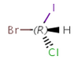
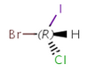
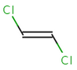
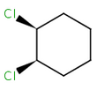
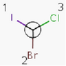

|
 |
|

|
|
|
The dimension of a molecule can be interpreted topologically, based on the connections of the consisting atoms, or spatially, based on the Cartesian coordinates of them. In this section the notion of dimension is used in spatial sense.
Molecules with same connectivity but different spatial arrangement are called stereoisomers.
Stereoisomer types:
|
 |
|
|
|
|
In general, single bonds are rotatable, but double bonds are not. If the substituents on each side of the double bond are different, then two diastereomers of the molecule can be distinguished based on the orientation of the ligands. Two substituents located on the same side of the double bond are referred to as cis isomer, otherwise, if the two substituents are located on the opposite side it is referred to as trans isomer.
 |
|
trans-1,2-dichloroethene |
cis-1,2-dichloroethene |
Alicyclic compounds can also display cis-trans isomerism. In this case a single bond becomes non rotatable due to constrain of a cycle.
 |
|
cis-1,2-dichlorocyclohexane |
trans-1,2-dichlorocyclohexane |
The cis/trans system for naming isomers is not effective if more than two different substituents are attached to the double bond. In this case, following the Cahn-Ingold-Prelog priority rules, a priority is assigned to each substituent on a double bond. If the two groups of higher priority are on opposite sides of the double bond (trans arrangement), then the E configuration is assigned to the bond. If the two groups of higher priority are on the same side of the double bond (cis arrangement), than the Z configuration is assigned to it.
|
|
2E-2,3-dichlorobut-2-ene |
2Z-2,3-dichlorobut-2-ene |
An atom in the molecule around which the ligands are arranged so that interchange of two ligands leads to stereoisomer is called stereocenter or stereogenic center. Chirality appears in stereoisomerism which is due to tetrahedral stereogenic centers. These centers can have point chirality. The ligands of the chiral center are assigned a priority based on the Cahn-Ingold-Prelog priority rules. Each chiral center is then labeled by R or S based on the orientation of the assigned numbers. The center is oriented so that the lowest-priority is pointed away from the viewer. If the priority of the remaining three substituents decreases clockwise, it is labeled R, otherwise, if it decreases counter clockwise, it is S.
|
 |
R-bromo(chloro)iodomethane |
S-bromo(chloro)iodomethane |
Explained in Wikipedia: Cahn-Ingold-Prelog priority rules.
Parity is a simplified and local description of a chiral center. It is used for storing the three dimensional arrangement of the ligands around a chiral center in a local canonical way without using the Cahn- Ingold-Prelog priority rules. There are two different major implementations of the tetrahedral parity (one is developed by MDL, the other is by Daylight) and they can be inter-converted.
The ligands of the chiral center are numbered according to the atom indexes in the molecule. The parity value assigned to the chiral center is based on the parity class and the spatial arrangement of the ordered ligands.
MDL uses only tetrahedral parity class with two possible values: 1 (indicating odd) and 2 (indicating even ). This type of parity is used in ChemAxon’s internal representation also . These parity values appear in the molecule file formats used by MDL ( mol, sdf, rdf) and also in the ChemAxon Marvin Document format (mrv).
Daylight defines the following parity classes:
Abbreviation |
Class |
Values |
TH |
Tetrahedral |
1, 2 (odd even) |
AL |
Allene-like |
1, 2 |
SP |
Square-planar |
1-3 |
TB |
Trigonal-bipyramidal |
1-20 |
OH |
Octahedral |
1-30 |
At present, only the tetrahedral and allene-like parity class is supported and they are converted to the corresponding MDL type parity. These parity values appear in SMILES and SMARTS molecule formats.
Links to Wikipedia:
Parity definition of Daylight
Parity definition of MDL
|
Query Hydrogens |
CIPStereoChemistry |